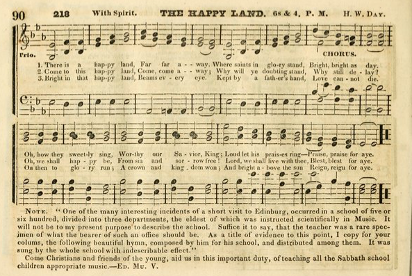
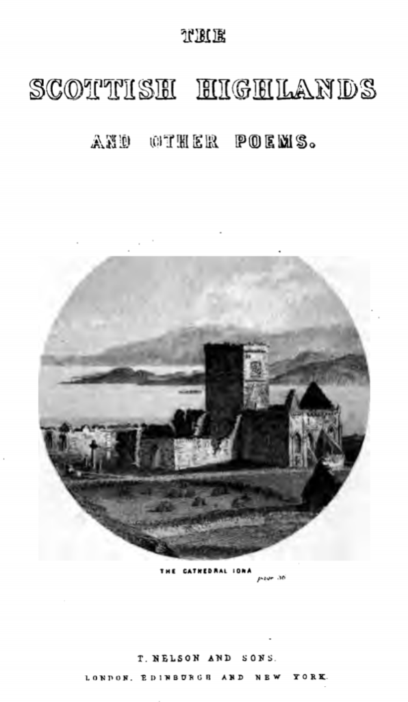
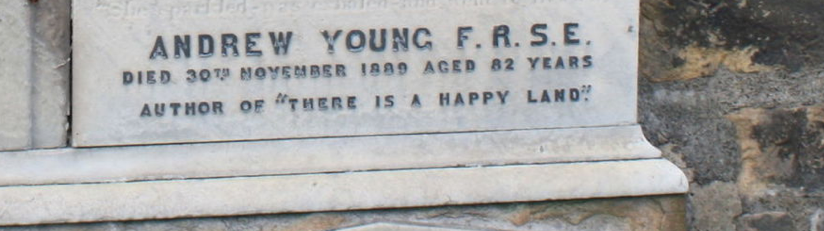

In hymnody, “There is a Happy Land” might be considered a one-hit wonder. While unknown to most modern church-goers, the hymn one of the most popular nineteenth century hymns in American and British Sunday schools.

School teacher Andrew Young (1807-1889) wrote “The Happy Land” in 1838. Young was a teacher and then a headmaster in Edinburgh and St. Fife, Scotland. As a poet he wrote hymn texts for Sunday school students, some of which reached wider audiences. Young (1876) recalls spending time with friends when he heard woman playing an “Indian air” at the piano, which he says “charmed me exceedingly” (vi). The tune stuck with him and soon after he the wrote three rhyming stanzas of “The Happy Land” in the middle of the night.
There is still some confusion regarding the origin of the tune that Young heard, now called Happy Land. Young claims that he heard the tune as part of a piano piece called the “Siege of Dehli,” but this music reflects on an event in 1857, almost 20 years after he heard the tine. Griffiths (1904) suggests that there may have been another piece of music written about Dehli in the early nineteenth century, with similar melodic ideas (p. 41). Alternatively, modern hymnology suggests that the tune was written by Robert Archibald Smith with the words “I have come from a happy land”, different than Young’s text (Cokrell, 2011). Early twentieth century American sheet music for this song attributes to a “Hindostan [Indian] air.”
Despite being membered only for “There is a Happy Land”, Young was a prolific poet and frequently contributor to poetry journals. Julian (1892) writes that “his poems entitle him to rank in the first order of Scottish minor poets.” Young’s book The Scottish Highlands and other Poems (1876) contains many beautiful hymn texts and poems.

Fortunately, Young was able to watch his famous hymn spread around the world through the work of Presbyterian missionaries such as Jon Ingills (Julian 1892). The song was first popularized by Rev. James Fall in his Sacred Song Book (1843) and after a few decades, it appeared in hundreds of hymnals in America and the UK and in translation by members of the London Missionary Society (L. M. S). Griffiths (1904) writes:
Of all the Sunday School hymns which attained world-wide popularity, there is perhaps not one that is more generally liked than that of the commencing ‘There is a happy land.’ From our earliest childhood, and the singing of it brings back vividly all the hallowed associations of that happy time… (41).
Butterworth and Brown (1906) give further praise: “his little carol had become one of the universal hymns”. In gratitude for the using the hymn Young (1876) writes that “the anecdotes which have reached me of the blessing it has proved to both young and old, in many lands, have been to me a source of the highest gratification and thankfulness” (p. vi).

The hymn has been referenced in many times in popular cultural including the in an issue of the comic strip Krazy Kat, the Mark Twain novel The American Claimant (1892) and the films The King and I (1956) and The Proposition (2005). Despite its “universal acclaim,” the hymn is not nearly as popular today as it once was. The website hymnary.org lists 539 hymnals containing “There is a Happy Land”, but only three of these were compiled after 1970.
The three-stanza hymn is an invitation to heaven. An irregular ABAACCCA rhyme scheme is punctuated in the middle section of the tune.
There is a happy land, far, far away,
Where saints in glory stand, bright, bright as day;
Oh, how they sweetly sing, worthy is our Savior King,
Loud let His praises ring, praise, praise for aye.
Come to that happy land, come, come away;
Why will you doubting stand, why still delay?
Oh, we shall happy be, when from sin and sorrow free,
Lord, we shall live with Thee, blest, blest for aye.
Bright, in that happy land, beams every eye;
Kept by a Father’s hand, love cannot die;
Oh, then to glory run; be a crown and kingdom won;
And, bright, above the sun, we reign for aye.
The first stanza introduces a distant realm (the “happy land”) where the saints worship the savior on his thrown (see Revelation 4-5, 7). The text urges the listener to join the throng (“Why will you doubting stand, why still delay?” and “Oh, then to glory run”) and shares a feeling of happiness brought by redemption (“sin and sorrow free”; Rev 7:14). The third stanza share some of the aspects of this other realm: perpetual love (“love cannot die”), saints with crowns (Rev. 4:4) and light brighter than the sun (Rev. 21:23). Similar texts with “heavenly” themes including the last verse of “Amazing Grace,” starting “when we’ve been there ten thousand years”, the saints “casting down their golden crowns” in “Holy, Holy, Holy” (Rev. 4:9).
Reflection Questions:
- What do you remember from your Sunday school experience? Were there any themes or lessons that stuck with you?
- Are there any hymns that you consider “universal hymns”, which are familiar and well-liked by many Christian audiences?
- The tune for “There is a Happy Land” may have been known to common people as a “song of the day”. Many of Luther’s hymns were also based on popular songs. What role does popular music play in worship in modern churches? What role should it play?
- How do you think Young felt knowing his song had such an impact? The Apostle Paul lists several “spiritual gifts”. Do you recognize any of these gifts in yourself or others? (See also: Romans 12:6–8, 1 Corinthians 12:8–10 and Ephesians 4:11).
And God has appointed in the church first apostles, second prophets, third teachers; then deeds of power, then gifts of healing, forms of assistance, forms of leadership, various kinds of tongues.
1 Corinthians 12:28
http://hymnblog.com/2019/05/27/history-there-is-a-happy-land/
“THERE IS A HAPPY LAND” hymnstudiesblog
“Let the saints be joyful in glory; let them sing aloud” (Ps. 149.5)
INTRO.:
A song which points out that the saints will be joyful and sing aloud in glory is “There Is A Happy Land.” The text was written by Andrew Young, who was born at Edinburgh, Scotland, on Apr. 23, 1807, the son of David Young who was for more than fifty years a teacher in Edinburgh. After graduating from an eight-year literary and theological study at the University of Edinburgh, Andrew was appointed by the Town Council as Headmaster of Edinburgh’s Niddry Street School in 1830. In 1838, Young was spending the evening in the home of a Mrs. Marshall, the mother of some of his pupils. She played several pieces on the piano, one of which caught his attention. Asking about it, he found that it was an Indian air called “Happy Land.” With it still ringing in his ears, he produced this hymn for it, and it was sung in his classes at the school. There it was heard by James Gall who included it in the first series of his Sacred Song Book in 1843.

(photo of Andrew Young’s tomb)
In 1840, Young had become Head English Master of Madras College, St. Andrews, from which he retired in 1853. Afterwards, he remained in Edinburgh and served for many years as Superintendent of the Greenside Parish Sabbath School. Many of his hymns and poems were contributed to various periodicals, and he published a collected edition of these, including “There Is A Happy Land,” in 1876 entitled The Scottish Highlands and Other Poems. Julian gives two different dates for his death–Nov. 30, 1889, and July 18, 1891; most books use the 1891 date, but Wikipedia says that He was found dead in bed on November 30, 1889, and was interred in Rosebank Cemetery, in north Edinburgh. The tune (Happy Land) is usually identified as an old Hindustani air or melody from the Hindus in India. The modern arrangement was made in 1850 by Leonard P. Breedlove. Among hymnbooks published by members of the Lord’s church during the twentieth century for use in churches of Christ, the only ones where I have found the song are the 1917 Selected Revival Songs edited by F. L. Rowe and the 1924 International Melodies edited by Earnest C. Love.
Other books in my collection where the song appears include: Best Hymns No. 3 (no date, editor, or publisher); The Good Old Songs (1913) edited by C. H. Cayce, published by Cayce Publishing Company, Thornton, AR; Silver Gems in Song (1969) edited by Church of God in Christ–Mennonite, published by Gospel Publishers, Moundridge, KS; The Christian Hymnary (1972) edited by John J. Overholt, published by The Christian Hymnary Publishers, Sarasota, FL; Praises We Sing (1980) edited by E. Yoder and L. Miller, published by Christian Light Publications Inc., Harrisonburg, VA; The Old School Hymnal (11th Edition, 1983), edited by Roland U. Green, published by The Old School Hymnal Co. Inc., Ellenwood, GA; and Zion’s Praises (1987) edited by Aaron Z. Weaver, published by Weaver Music Company, Pittsgrove, NJ.
The song reminds us of the joy that God’s people will experience in heaven.
I. Stanza 1 affirms that this happy land exists
“There is a happy land,
Far, far away,
Where saints in glory stand,
Bright, bright as day.
O how they sweetly sing,
‘Worthy is our (the) Savior King.’
Loud let His praises ring,
Praise, praise for aye.”
(Some books change lines two and three to “Bright, bright as day; There…,” line four to “In glad array,” and line eight to “For evermore.”)
- The Bible also affirms that this happy land exists: Heb. 11.13-16
- Some object to songs which picture the saints as already in heaven, standing in glory; however, even those of us who believe that the souls of the departed righteous are now in the Hadean realm awaiting the resurrection and judgment can still picture them as being in bliss in “the heavenly realm” because they are said to depart and be with Christ: Phil. 1.23
- There they can join with those who fall before the Lamb and say that He is worthy: Rev. 5.8-11
II. Stanza 2 tells us that Christ went to this happy land
“Oh, to that happy land
Christ went away,
Who does in glory stand,
While we delay.
Oh, we shall happy be,
When from sin and sorrow free;
Lord, we shall live with Thee,
Blest, blest for aye.”
(This stanza is found only in The Old School Hymnal, where it is used in place of stanza 4, so it may be an emendation by the editors of that book.)
- Jesus went away to this happy land to prepare us a place: Jn. 14.1-3
- There He dwells; usually, He is pictured as sitting at the right hand of God, but at least on one occasion He did stand: Acts 2.34-35, 8.56
- While Jesus is already there, we delay or remain here in this earthly house: 2 Cor. 5.1-4
III. Stanza 3 encourages us to look to this happy land
“Bright in that happy land
Beams every eye;
Kept by a Father’s hand,
Love cannot die.
Oh, then to glory run,
Be a crown and kingdom won,
And bright above the sun
Reign, reign for aye.”
(Some books change the fifth and sixth lines to read “Then shall His kingdom come; Soon we’ll or Saints shall share this/a glorious home.” The original last line read “We or We’ll reign for aye;” some books change it to “Reign evermore.”)
- Eyes will be bright in that happy land because God shall wipe away all tears: Rev. 21.4
- Those who do run to glory will win a crown and a kingdom, the latter referring to the eternal kingdom of our Lord and Savior Jesus Christ: Jas. 1.12, 2 Pet. 1.11
- Some object to songs which speak of the saints’ reigning in heaven, apparently thinking somehow that this is premillennial, but the Bible says that the servants who serve before the throne of God and of the Lamb shall reign forever and ever: Rev. 22.3-5
IV. Stanza 4 exhorts us to come to this happy land
“Come to that happy land,
Come, come away.
Why will ye (you) doubting stand,
Why still (yet) delay?
Then we shall happy be,
When from sin and sorrow free.
Lord, we shall dwell with Thee,
Blest, blest for aye.”
(Again, some books change the last line to “Blest evermore.)
- The way that we come to that happy land is by using the time that we have in this life to prepare for the blessed hope and glorious appearing of Jesus Christ: Tit. 2.11-14
- And we need to be doing that as quickly as possible rather than standing in doubt and delaying: 2 Cor. 6.2
- Those who thus prepare will have the blessed privilege of dwelling with the Lord in eternal life: 1 Jn. 2.25
CONCL.: Many people in churches of Christ are probably not familiar with this song because it has been in so few of our books, especially the more recent ones. In her “Little House” stories, Laura Ingalls Wilder remembered this as a song that her mother, Carolyn Quiner Ingalls, used to sing frequently to the children to comfort them and put them to sleep. I cannot remember for sure, but it seems to me that it was used occasionally on the television show based on the books. Sometimes it is thought of as a “children’s song,” and it is certainly appropriate for children, but we adults also need to remember that “There Is A Happy Land.”
https://hymnstudiesblog.wordpress.com/2020/04/20/there-is-a-happy-land/
Words: Andrew Young (b. Apr. 23, 1807; d. Nov. 30,
1889)
Music: Happy Land, a Hindustani air, arranged by
American musician Leonard P. Breedlove (nineteenth century, no
specific dates available)
Links:
Wordwise Hymns
The
Cyber Hymnal
Hymnary.org
Note: In his early years Andrew Young served as head master at the Niddry Street School in Edinburgh, Scotland, then as head English master at Madras College in the University of St. Andrew. After he retired he served for more than thirty years as Sunday School Superintendent of the Greenside Parish Church in Edinburgh.
Young organized the children of the Sunday School into three departments, perhaps something new at that time. Another interesting innovation was to include training in music in the third department (possibly teens). Imagine how this must have improved the hymn singing of the congregation in later years. Maybe modern Sunday School superintendents should give this some thought.
Young’s song was used in the motion picture Arsenic and Old Lace, a comedy about two spinsters with a bizarre hobby, and also in the film The King and I. Laura Ingalls Wilder writes of her mother singing it, in Little House on the Prairie. In a later book she tells how some railway workers were singing a naughty parody of the hymn, but when they saw Laura’s mother coming, they stopped!
Happiness is that elusive state we’re all hoping to find. And the American Declaration of Independence calls “the pursuit of happiness” an “inalienable right.” At the time the Declaration was conceived, that seems to have meant a right to pursue prosperity and the acquire property, but it is more than that.
In the Bible, when the word “happy” is used, it seems rather to have an other-earthly dimension, referring to spiritual progress in one’s life, spiritual values, and the experience of God’s blessings. Modern translations of the Scriptures often replace the word “blessed” with “happy,” though the former word is richer than merely elated feelings.
Here are some people the Bible says are “happy” (NKJV). The nation of Israel (Deut. 33:29) ; the servants of Solomon (I Kgs. 10:8); the one whom God corrects and chastens (Job 5:17); the man who has many children (Ps. 127:4-5); the people whose God is the Lord [Jehovah]” (Ps. 144:15); the one who has wisdom (Prov. 3:13); the one who shows mercy to the poor (Prov. 14:21).
A number of verses speak of the happiness of the people of Israel because of the bountiful land God has given them (Deut. 7:13; 8:10; 28:8, 12). Canaan, the land of happiness for Israel in the Old Testament, has been taken by some hymn writers as a picture of heaven, the future place of happiness for the people of God.
One who did so was Scotsman Andrew Young. One evening, back when he was at the Niddry Street School, he was visiting in the home of one of his students. The Marshall family were all quite musical, and the student’s mother sat down at the piano and played a Hindu song with a striking melody. Young was impressed by the tune, and wrote for it some Christian words about our heavenly home.
The song was first sung by the student’s at Young’s school, and it soon was being used by Sunday Schools here and there. It was later translated into the languages of many other lands as well. It’s bright tune beautifully reflects the joy the words express.
CH-1) There is a happy land, far, far away,
Where saints in glory stand, bright, bright as day.
Oh, how they sweetly sing, worthy our Saviour King,
Loud let His praises ring–praise, praise for aye.
CH-2) Come to this happy land, come, come away;
Why will ye doubting stand, why still delay?
Oh, we shall happy be, from sin and sorrow free,
Lord, we shall live with Thee, blest, blest for aye.
CH-3) Bright, in that happy land, beams every eye;
Kept by a Father’s hand, love cannot die.
Oh, then to glory run; a crown and kingdom won;
And, bright, above the sun, reign, reign for aye.
One time, many years ago, there was a young man out hunting deer. As he made his way through the brush, he heard a woman singing. Soon he came to a clearing with a small cabin, and an elderly black woman, washing clothes, singing as she worked, “There is a happy land, far, far away.” As the hunter drew near he said, “Auntie, I see you are blind.” “No, Massa,” she I replied, “I is not blind. I can’t see you, nor these trees and rocks, nor dese yer mountains, but I can see into de kingdom, I can see de ‘Happy land, far, far away.’”
Questions:
1) How will it affect our daily lives, if we can see,
by faith, the “happy land far, far away”?
2) What makes you happy today?
https://wordwisehymns.com/2017/10/25/there-is-a-happy-land/